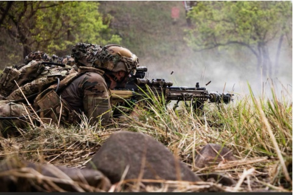
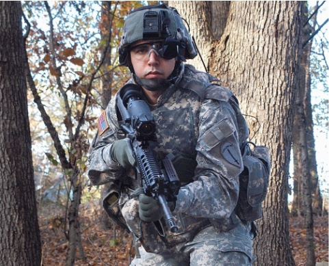

When a weapons project gets wounded at the Pentagon, the bleeding is hard to contain. “Once you start bleeding in the building, the sharks come after you,” said Army Col. Bruce D. Jette. The casualty in this case was the “land warrior,” a command-and-control system for infantry soldiers intended to provide information on the location of friendly and enemy forces and to facilitate communication between the soldier and higher command levels.
The land-warrior system consists of a computer, a radio, weapon and helmet-mounted display eyepiece—all of which are linked together for transmission of voice, data and imagery between soldiers and other battlefield systems.
The program officially began in January 1996. By 1998, the system had turned into a laughingstock. It failed critical tests and was over budget. But what made the system the butt of jokes was the way the hardware fit on the soldier. The gear was cumbersome for even the toughest infantrymen to wear. The computer, mounted on the soldier’s back, created a “turtle-shell” effect when a soldier would drop and roll.
After serious test failures in the spring of 1998, the Army assigned Jette to take over the program and try to save it. At the time, the prime contractor was the Raytheon Co., in El Segundo, Calif. Jette said that he believed the program was failing, because it was not focused on the use of commercial technology and, most importantly, because it was not emphasizing ergonomics. To be successful, a system such as land warrior had to be comfortable.
“Our business paths were diverging,” Jette said in an interview in Fort Belvoir, Va., last fall. “As a good defense contractor, they tended to be focused on those things that weren’t necessarily readily available in the commercial sector. ... We were trying to go in a direction where we leveraged commercial technology.” The program was being led by the engineers, “and all the human factors were a problem,” he said.
When Jette became the program manager, the land warrior’s computer motherboard was not only obsolete by commercial standards, but its price tag topped $32,000. The entire electronics package exceeded $85,000 per soldier.
By 1999, Raytheon was being phased out of the program. The official letter of termination arrived in the summer of 2000, said spokeswoman Janet Kopec.
To save the program, Jette sought “guns for hire” in Silicon Valley. These typically are small, high-tech firms that design cutting-edge equipment and outsource the manufacturing. After a competition in 1999 that included a Raytheon-led team and General Dynamics Corp., the Army selected Pacific Consultants LLC, a Mountain View, Calif. engineering firm, to develop the computer, the radio and the software for land warrior. For the squad leader, the Army chose a hand-held multi-band radio made by Thales Communications Inc., in Rockville, Md.
“We are guns for hire,” said Hugh Duffy, a electronics engineer and the chief executive of Pacific Consultants. The company, which employs 250 PhDs, designs high-tech products for large manufacturers, such as Motorola. For the land-warrior competition, with only 12 weeks to prepare a prototype, Pacific built the computer and the radio subsystems from parts bought at Fry’s Electronics, a computer electronics chain similar to Radio Shack. Jette agreed that the system is made up of components that most people could buy themselves, but, “there is an awful lot of tweaking needed to make it a real system,” he said.
The most challenging part of land warrior is to integrate the thermal weapon sight, the laser rangefinder, the computer and the global-positioning satellite receiver and then write software that will make the system user-friendly. The electronics package for land warrior should cost no more than $15,000 per soldier, Jette said. Based on a production run of 47,245 systems, the current cost projection is $17,500 to $18,500 per soldier for the electronics. The entire land-warrior system is expected to cost about $32,000 per soldier.
Duffy said that the cost goals for the electronics are somewhat unrealistic. “I believe that we are on target for a $20,000 unit cost,” he said. If the program is successful, full-production land warrior systems would be fielded by 2007.
The new-and-improved land warrior was tested in September, during an Army-sponsored exercise held at Fort Polk, La. A platoon of 42 soldiers equipped with land-warrior gear was air-dropped into the woods. According to Jette, the experiment proved that land warrior still is alive and well. The ability to see a “common tactical picture” on their head-mounted displays helped soldiers locate each other and the enemy. GPS satellite antennas provided the icons on the screen for soldier positions.
The system that was used in that exercise was version 0.6. The contract that was awarded to Pacific Consultants is to develop an improved system, version 1.0. The plan is to buy about 200 units for further testing. Duffy would not say how much the firm will charge the Army to design the 1.0 version. The Army’s funding plan for land warrior includes $484 million for fiscal years 2002-2007.
During the experiment, it became clear that several improvements would be needed for land warrior. The range of the radio, for example, was limited to about 1,000 meters. Another drawback of the 0.6 version is the thick cables that connect various devices. “They are ugly, heavy, useless cables,” said Duffy. “A soldier running through the woods with those cables hanging from his helmet would get snagged and would rip his head off.” The land warrior 1.0 will have a new generation of cables, Duffy explained. They will be thread-thin and will be sown into the uniform. The Army tends to buy overly hardened cables, made to last a lifetime. “We think it’s better for them to be cheap and disposable,” he added.
“We do things the Silicon Valley way, not the military way,” Duffy stressed. The acquisition strategy for the old land warrior doomed the program, he said, because the same company that was designing the system also had a stake in the production. “It’s a disastrous philosophy,” Duffy asserted. “In the military, they should not allow the same company to design and build a system. Because companies design products that no one else can make, so you can’t use a competing product.”
The communications system for version 1.0 is a mobile wireless network that transmits voice and data over the Internet Protocol (IP). The commercial radio was modified to operate at the military 1.8 MHz frequency. It also has Type 3 encryption, a mandate for military radios. A power booster was used to extend the range.
But even if soldiers are within range, one may be around a corner, or behind a building. To overcome that problem, Duffy designed a mesh radio that can reroute calls automatically. “We designed software to make the radio reroute traffic, routing signal to soldiers who are not in the line of sight.”
The members of a land-warrior squad essentially operate as an ad-hoc network. The participating nodes act as routers, when they forward data packets on behalf of other nodes on the network. “The network has to be smart enough to figure out who got the message and who didn’t,” Duffy said. “You have to have a database that tells you who didn’t get the messages and stores those messages.” The mesh radios would solve the problem that the soldiers encountered at Fort Polk, when their radios were out of range.
“The range problem is a red herring,” said Duffy. “It’s not that you ran out of range. It’s that soldiers run into foxholes, and no matter how much you boost the power, you wouldn’t be able to reach them.” Nevertheless, Duffy conceded, “I am prepared to bet that some new problem will arise in the ne radio. ... The trick is to have products that are easily upgraded.”
To help land-warrior users remain undetected, the radios are equipped with a technology called direct sequence, which helps minimize the amount of radio power the operator is broadcasting. “Spoofing and decoding is extremely difficult to do with military radios,” Duffy said. “But if someone tried to detect me, they would give away their position faster than I’ll give away mine.” The technique known as “spread spectrum” is one way to try to become undetectable. The power is spread across a broad range of frequencies, thus making it difficult for spoofers to detect small portions of the spectrum.
Justus Decher, vice president of business development at Pacific, said that the land-warrior radio is being “watched closely” by major manufacturers, some of which would be competing to build this radio for the Army and possibly for commercial users.
Each land-warrior system has two batteries. The set runs for 24 hours, and automatically switches to the other battery when one dies. Future systems will be more sophisticated, with rechargeable fuel cells, said Duffy. “Fuel cells will happen two years from now,” he said. “I have seen a pin-size fuel cell that runs a cell phone.” Jette noted that small generators and turbines could provide alternative solutions in the far term. “They are very promising but still six to eight years out.” Fuel cells would run with hydrogen, petroleum and jet fuel. The Army developed a 1/4-pound fuel cell to test on land warrior. It is 3 inches tall and generates 70 watts of power.
The electronics in land warrior 0.6 collectively weigh 13 pounds. The system today has two metal boxes: one computer and one radio. Eventually, the two will merge, Duffy said. “The whole thing should be the size of a cellular phone.”
But even 13 pounds is a small portion of the entire land-warrior load, which weighs more than 90 pounds. The heavy load is what is required for riflemen to carry, under Army Infantry Center rules. It is 92.6 pounds worth of weapons, ammunition, hand-grenades and protective garments. Sixty percent of the weight is the uniform and the clothes in the rucksack. There are 55 pounds of personal clothing and equipment, and 24 pounds of weapons and ammunition.
“If we take 100 percent of the electronics off, he still has to carry 79 pounds just to get dressed and go to battle,” said Jette. For land warrior, the goal was to add the electronics without increasing the overall weight beyond 92.6 pounds. “It’s hard to find weightless electronics,” Jette quipped. The solution is to trade items. For example, the Kevlar vest with Ranger body armor, which weighs 24 pounds, is being replaced with a 16-pound Interceptor system, already used by U.S. Marines.

SAN JOSE, Dec 14: Meet the Windows-based warrior of the future, locked and loaded with the latest information-age weapons from Silicon Valley.
Like a toy soldier come to life, U.S Army Sergeant Chris Augustine was paraded out in full battledress and adorned with gadgets at the Silicon Valley Technology & Homeland Security Summit in San Jose, California on Thursday.
The goal of the conference, the first of its kind, was to show how technology companies could find military contracts to supplant market losses from the economic slowdown and dot-com bust.
“You’ve seen the bin Laden tapes. We’d like to show you a response to that,” Hugh Duffy, chief executive of Pemstar Pacific Consultants, a defense contractor in Mountain View, California, said to applause.
During a luncheon presentation, Duffy showed off a test version of the Land Warrior System he designed and his firm is manufacturing for the US government. Sporting what Duffy described as a “personal area network,” Augustine, an Airborne Ranger, walked on stage holding an unloaded M-4 assault rifle at the ready with a lot of little black boxes strapped on his body.
The equipment runs on a wireless local area network, allowing soldiers to communicate with each other and with commanders in far away offices, Duffy said.
The rifle features an adjustable stock with a lens near the end that transmits thermal and regular images to a matchbook-size screen. The pictures can be transmitted over the network to central command, said Justus Decher, executive director of business development at Pemstar.
Soldiers can use the rifle barrel like a periscope to survey the area without having to climb out of a foxhole and use the thermal lens to find people hiding in the brush, he said.
Strapped to Augustine’s right back hip was a computer running Microsoft Corp.’s Windows 2000 operating system and on his left back hip was an Intel Corp. StrongARM-based “triple navigation box,” Decher said.
A Global Positioning System antenna, jutted up from the right shoulder and a wireless antenna was on the left shoulder.
The system was made from off-the-shelf components purchased at Fry’s Electronics and RadioShack Corp. Duffy said, adding that he had built the prototype in just 12 weeks and beat out companies like Raytheon Co. and Motorola Inc. for the first of several contracts in January 2000, he said.
The US military will complete its testing of the Land Warrior system within six months, Decher said. The company would not say when the systems are expected to be deployed in the field, saying the US government did not want that information released.
—Reuters
The project continued, and in 2006, a major field trial began. The Department of Defence reported the results of the successful trial and deployment in the video below:
By 2007 the cost per soldier had risen to $125,000. The Department of Defence reluctantly cancelled the Land Warrion program on cost grounds.
In late 2000, Duffy sold Pacific Consultants to PEMSTAR, a Minisota-based contract manufacturer. He became CEO of Pemstar Pacific Consultant, a wholly owned subsidiary of Pemstar. Near the end of 2001 he retired to “spend more time with his money.“ In 2004 he moved from Silicon Vally to the Costa del Sol in Spain to "live the good life.”